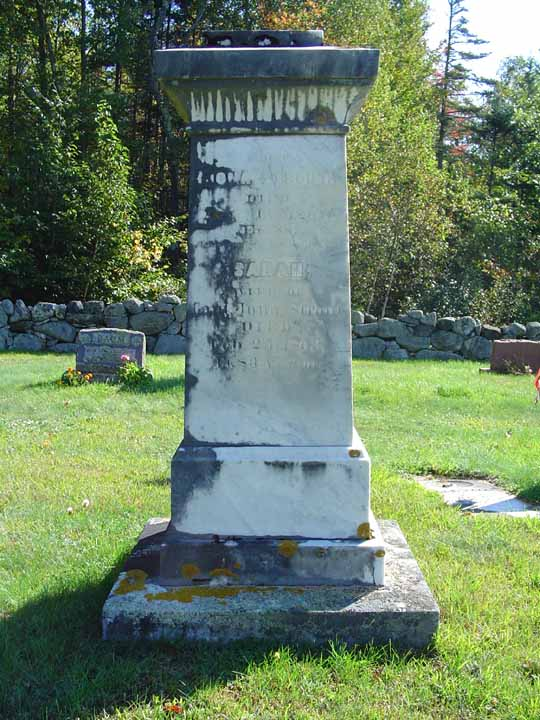
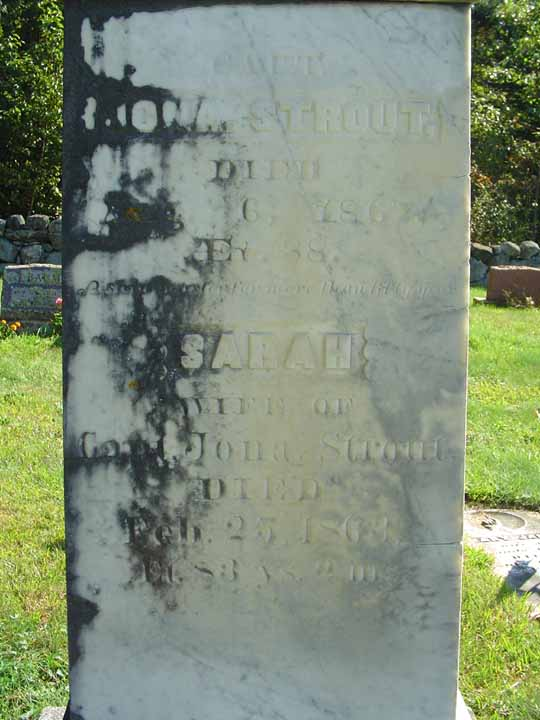

Birth Data
Birth record for Benjamin Vining (from Weymouth, Massachusetts, town office):
Census Data
| 1790 | 1800 | 1810 | 1820 | |
| Benjamin Vining | M 16 and upward | M 45 and over | M 45 and over | dead |
| Mehitabel Brooks | dead | |||
| Lydia Turner | [dead?] | |||
| Bathsheba Davis | F | F 45 and over | F 45 and over | ? |
| John Vining | married and living in separate household | |||
| Benjamin Vining Jr. | M 16 and upward | married and living in separate household | ||
| Bela Vining | M 16 and upward | married and living in separate household | ||
| Lucinda Vining | married and living in separate household | |||
| Hannah Vining | dead | |||
| Mehitabel Vining | F | married and living in separate household | ||
| Sarah Vining | F | married and living in separate household | ||
| Reuben Vining | dead | |||
| Josiah Vining | M under 16 | M of 16 and under 26 | married and living in separate household | |
| Abigail Vining | F | F of 16 and under 26 | married and living in separate household |
Death Data
Gravestone for Sarah Vining, daughter of Benjamin and Mehitabel (Brooks) Vining and wife of Jonathan Strout, in Sawyer Cemetery, Durham, Androscoggin County, Maine.
